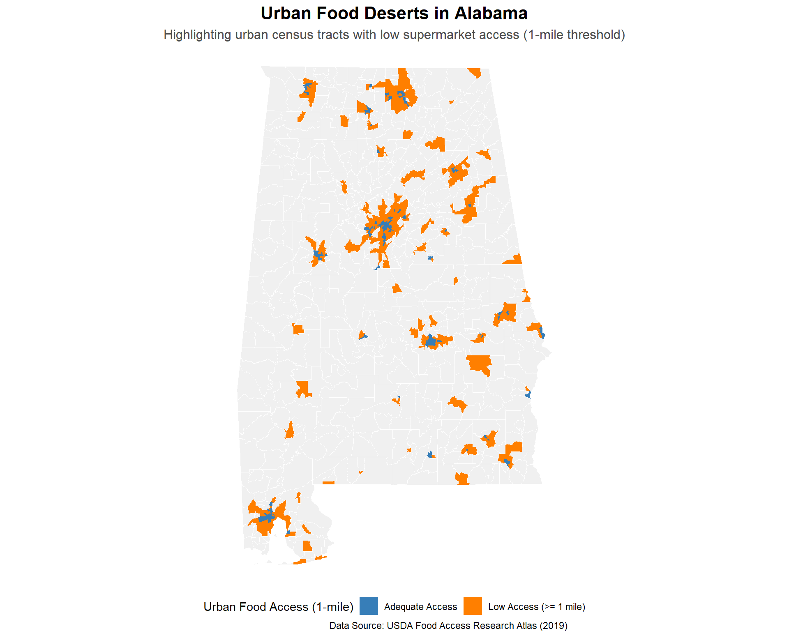
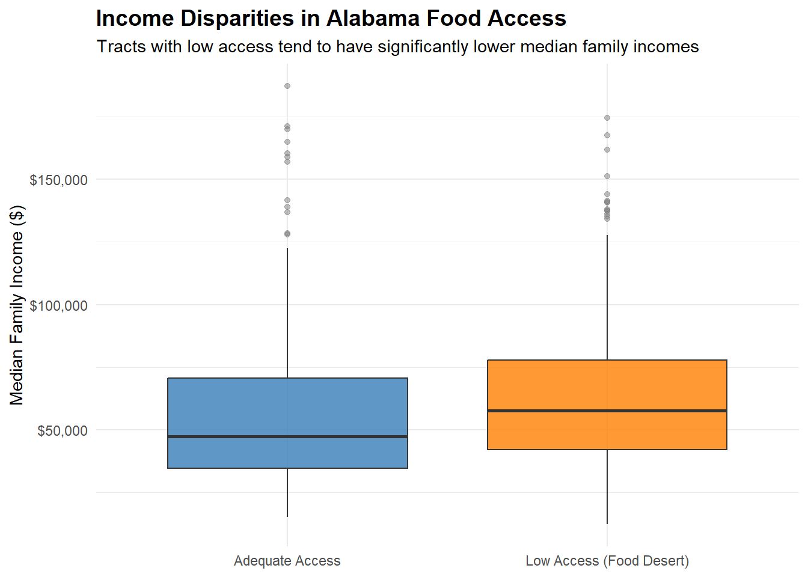
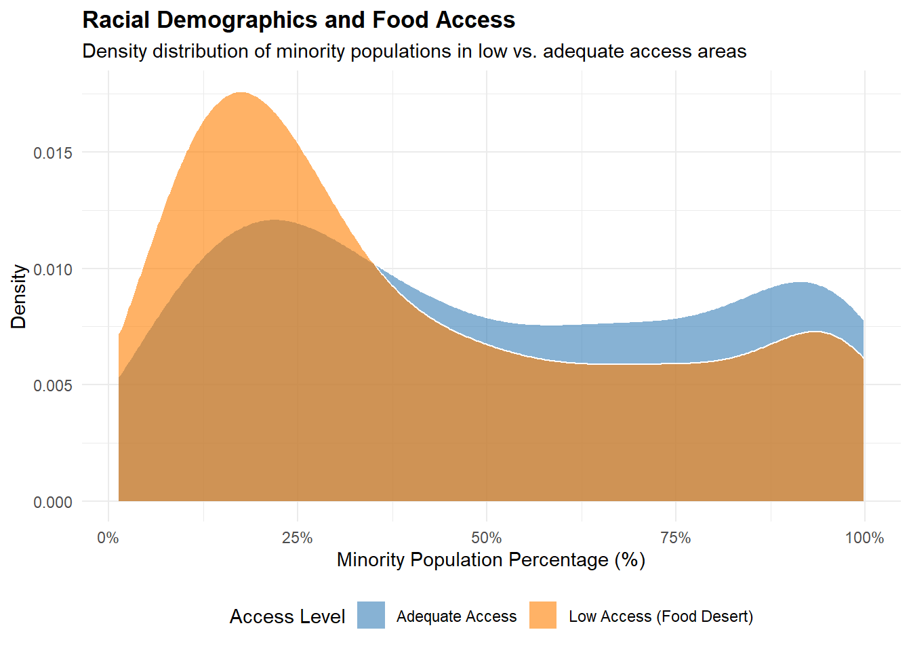
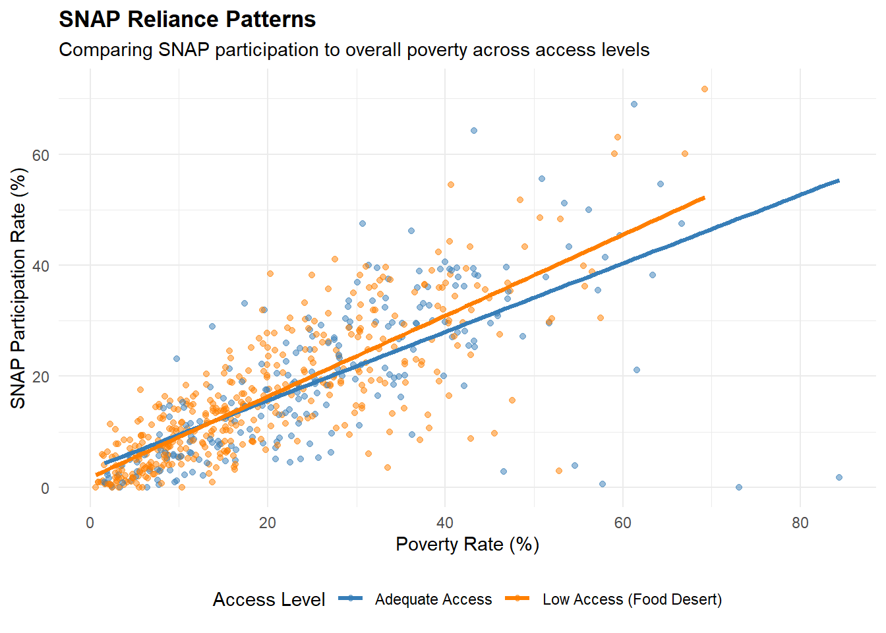
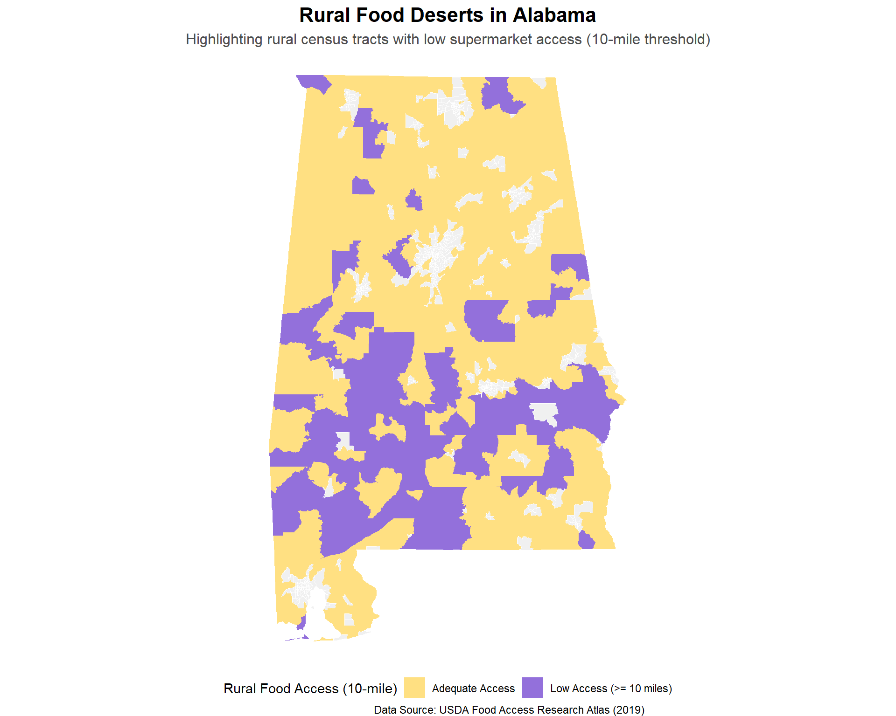
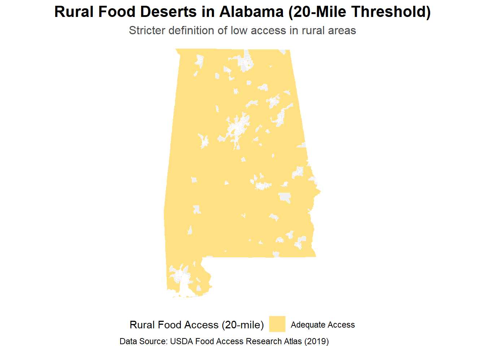
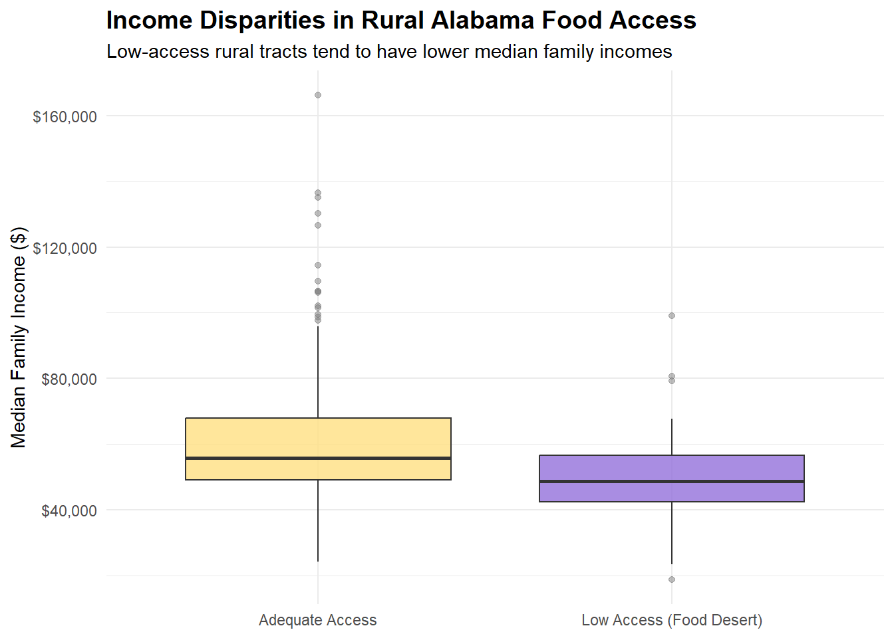
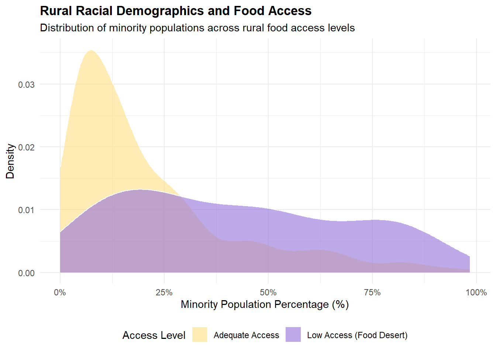
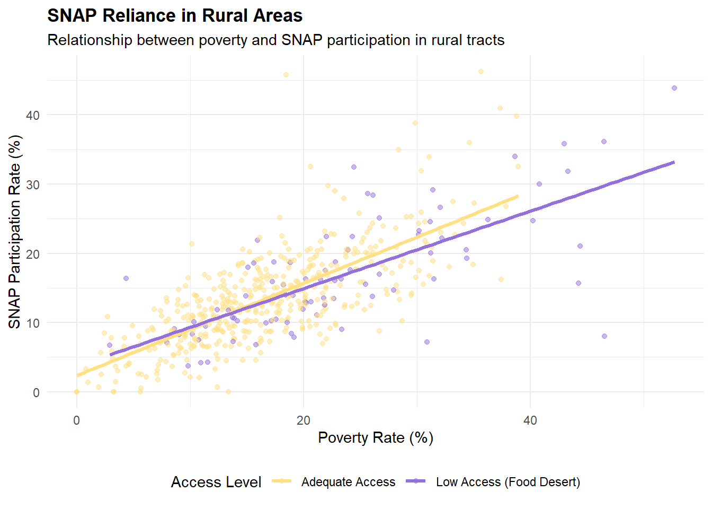

library(sf)
library(dplyr)
library(ggplot2)
library(readr)
library(tidyr)
library(readxl)
library(stringr)
library(janitor)
library(knitr)
library(scales)Food Access Inequality in Alabama
Comparing Urban and Rural Food Deserts Across Distance, Income, Race, and SNAP Reliance
I. Introduction
1.1 Problem Statement and Motivation
Food access is an important issue in public health, urban planning, and social inequality. In the United States, some communities face limited access to supermarkets or large grocery stores that provide affordable and nutritious food. These areas are often discussed as “food deserts”, while official data sets such as the USDA Food Access Research Atlas usually describe them more specifically as low-income and low-access areas.
This project focuses on Alabama, a state that includes both urban centers and large rural areas. Food access barriers may look very different in urban and rural contexts. In urban areas, a distance of 0.5 mile or 1 mile from a supermarket may be a meaningful barrier, especially for residents without cars or with limited mobility. In rural areas, however, people may regularly travel longer distances, so thresholds such as 10 miles or 20 miles may better capture geographic isolation from food retailers.
Therefore, this project explores how different distance thresholds identify food desert conditions in urban and rural Alabama, and how these patterns are associated with income, race/ethnicity, and SNAP participation. This question is important because a single definition of food access may not accurately describe the lived experiences of both urban and rural residents. Understanding these differences can help policymakers and community organizations design more targeted food access interventions.
1.2 Data Sources and Methodology
To address this problem, we plan to use census tract-level data from the USDA Food Access Research Atlas. This data set provides information on low-income and low-access census tracts, including distance-based food access measures such as 0.5 mile, 1 mile, 10 miles, and 20 miles from the nearest supermarket, super center, or large grocery store. We will also use census tract boundary data to map food access patterns across Alabama.
Our analysis will first separate Alabama census tracts into urban and rural groups. For urban areas, we will focus on shorter-distance indicators, especially 0.5-mile and 1-mile access measures. For rural areas, we will focus on longer-distance indicators, especially 10-mile and 20-mile access measures. We will then compare the spatial distribution of food access barriers across these two types of places.
In addition, we will examine how food desert indicators are associated with socioeconomic and demographic characteristics, including income, race, and SNAP participation. These variables allow us to explore whether limited food access is concentrated among lower-income communities, communities of color, or areas with higher levels of food assistance participation.
1.3 Proposed Analytic Approach
Our proposed approach is mainly descriptive, comparative, and spatial. First, we will create maps of Alabama census tracts to visualize where low-access areas are located under different distance thresholds. This will allow us to compare how the identification of food deserts changes when we use urban-oriented thresholds, such as 0.5 mile or 1 mile, versus rural-oriented thresholds, such as 10 miles or 20 miles.
Second, we will calculate summary statistics for urban and rural census tracts. For example, we may compare the percentage of tracts classified as low-access under each distance threshold. We may also compare average income, racial/ethnic composition, and SNAP-related measures between tracts with and without limited food access.
Third, we will use visualizations such as bar charts, maps, and grouped comparisons to examine the relationship between food access and social vulnerability. Rather than making a causal claim, our analysis will identify descriptive patterns that suggest where food access problems are more severe and which communities may be more affected.
1.4 Policy Relevance and Intended Audience
This analysis can help policymakers, planners, and community organizations better understand how food access inequality differs between urban and rural Alabama. A short-distance threshold may be useful for identifying food access barriers in cities, where residents may rely more on walking, public transportation, or short trips. In rural areas, however, longer-distance thresholds may be more appropriate because the built environment and transportation patterns are different.
By comparing urban and rural food desert definitions, this project highlights why food access policy should not rely on a single distance standard. It also connects food access to broader issues of income, race, and SNAP participation. This can help identify communities where limited supermarket access overlaps with economic disadvantage and food assistance needs. Ultimately, the project aims to provide a clearer and more context-sensitive understanding of food access inequality in Alabama.
II. Packages Required
2.1 Loading packages
In this study, the following packages will be used.
2.2 R Packages Explanation
2.2.1 sf
The sf package is used to handle spatial data, such as census tract boundary shapefiles. It allows us to read, join, and map geographic data for Alabama census tracts.
2.2.2 dplyr
The dplyr package is used for data cleaning and manipulation. In this project, it helps us filter urban and rural census tracts, select relevant food access variables, create new variables, and summarize patterns by area type.
2.2.3 ggplot2
The ggplot2 package is used for data visualization. We use it to create maps and plots that show the distribution of food access indicators and relevant factors across urban and rural areas.
2.2.4 readr
The readr package is used to import tabular data, such as CSV files from the USDA Food Access Research Atlas. It helps load the food access data set into R in a clean and efficient way.
2.2.5 tidyr
The tidyr package is used to reshape and organize data. It is useful when comparing multiple distance-based indicators, such as 0.5-mile, 1-mile, 10-mile, and 20-mile access measures, in a consistent format.
2.2.6 knitr
The knitr package is used to combine R code, text, plots, and tables into a single document, and automatically compiles them into clean, professional output formats like HTML, PDF, Word, and slides. In our project, we used the kable() function inside the package to create tidy tables.
2.2.7 readxl
The readxl package is used to import Excel files into R. In this project, it can help us load the Food Access Research Atlas Data which is in .xlsx format and convert them into data frames for cleaning, analysis, and visualization.
2.2.8 stringr
The stringr package is used to clean and manipulate text variables in R. In this project, it can help us combine region codes to assist the join of food access data with geographic or demographic data sets.
2.2.9 janitor
The janitor package helps standardize messy column names. The function clean_names() is used to fixes messy column names in the food access data frame.
2.2.10 scales
The scales package is used to format axis labels, such as displaying median family income in dollar format.
III. Data Preparation
3.1 The Data List
These two data sets are used in the analysis.
3.2 Descriptions of Source Data
3.2.1 The USDA Food Access Research Atlas Data (2019)
The USDA Food Access Research Atlas was originally developed to provide census-tract-level measures of food access across the United States. Its purpose is to help researchers, planners, and community organizations map and analyze low-income and low-access areas using different measures of supermarket accessibility. The source of the Food Access Research Atlas Data is stated on the document page of USDA Economic Research Service website. Population characteristics, including age, race, Hispanic ethnicity, and group quarters residence, come from the 2010 Census of Population. Urban and rural classifications are based on 2019 urbanized area geographies. Income, vehicle availability, and SNAP participation data come from the 2014–2018 American Community Survey. These data were originally collected at different geographic levels, such as census blocks, block groups, and census tracts, and were then allocated to 0.5-kilometer grid cells for analysis.
This data set contains 147 variables, covering information such as census tract numbers, state names, county names, whether they are urban or rural areas, as well as various influencing factors such as accessibility, income, and race. Missing values are recorded as NULL.
3.2.2 The cartographic boundary files of United States (2010)
We use the 2010 Census Cartographic Boundary Files from the U.S. Census Bureau to provide the geographic boundaries for Alabama census tracts. The original purpose of these files is to support small-scale thematic mapping. The Census Bureau describes them as simplified representations of selected geographic areas from the MAF/TIGER geographic database, and they are available in shapefile format for use in GIS software. In this project, the shapefile does not provide food access variables directly; instead, it provides census tract polygons and geographic identifiers that allow us to join the map boundaries with the USDA Food Access Research Atlas. The key variables include tract identifiers such as GEOID, county and state codes, land and water area, and polygon geometry. A peculiarity of this data set is that the boundaries are simplified for mapping purposes, so they are best suited for visualizing spatial patterns rather than measuring exact boundaries.
This data set contains 9 variables, and we mainly use the census tract geometry features. Missing values are not the main concern under this context.
3.3 Data Importing and Tidying
3.3.1 Data Importing
First, import the Food Access Research Atlas Data (2019), and store it in a data frame called food_access.
# load the Food Access Research Atlas Data
food_access <- read_excel("FoodAccessResearchAtlasData2019.xlsx",
sheet = "Food Access Research Atlas",
na = c("", "NA", "NULL"))Second, import the Cartographic Boundary File of Alabama, and store it in a data frame called al_shape.
# load the shape files of Alabama
al_shape <- st_read("shapefiles/gz_2010_01_150_00_500k.shp", quiet = TRUE)3.3.2 Data Tidying
al_shape tidying
First, check the variable names and rename them according to the snake_case rule.
names(al_shape)[1] "GEO_ID" "STATE" "COUNTY" "TRACT" "BLKGRP"
[6] "NAME" "LSAD" "CENSUSAREA" "geometry" al_shape <- al_shape |>
rename("geo_id" = "GEO_ID",
"state_code" = "STATE",
"county_code" = "COUNTY",
"tract_code" = "TRACT",
"block_group" = "BLKGRP",
"name" = "NAME",
"lsad" = "LSAD",
"census_area" = "CENSUSAREA")
glimpse(al_shape)Rows: 3,437
Columns: 9
$ geo_id <chr> "1500000US010150022002", "1500000US010150022003", "1500000…
$ state_code <chr> "01", "01", "01", "01", "01", "01", "01", "01", "01", "01"…
$ county_code <chr> "015", "015", "015", "015", "015", "017", "017", "017", "0…
$ tract_code <chr> "002200", "002200", "002200", "002501", "002502", "953900"…
$ block_group <chr> "2", "3", "4", "3", "4", "2", "4", "1", "2", "1", "3", "3"…
$ name <chr> "2", "3", "4", "3", "4", "2", "4", "1", "2", "1", "3", "3"…
$ lsad <chr> "BG", "BG", "BG", "BG", "BG", "BG", "BG", "BG", "BG", "BG"…
$ census_area <dbl> 10.992, 0.437, 0.951, 9.084, 4.915, 1.264, 0.316, 8.531, 1…
$ geometry <MULTIPOLYGON [°]> MULTIPOLYGON (((-85.65159 3..., MULTIPOLYGON …After previewing the data, we found that:
Variable
block_groupcontains the same information as variablename.geo_idcontains all other codesValues in
lsadare all “BG” (which means “Block Group”)The order of
county_codeis not in an ascending pattern.The granularity of this data set is as fine as being measured at the block group level, while the smallest unit in our study is the census tract.
So we perform the following operations to tidy the data frame.
al_shape_clean <- al_shape |>
select(-name, -lsad) |> # remove the unnecessary variables
arrange(county_code) # Sort in ascending order
al_tract <- al_shape_clean |>
group_by(state_code, county_code, tract_code) |> # group by tract_code
# merge the geometries of all block_groups within the same tract
summarise(
track_area = sum(census_area, na.rm = TRUE),
.groups = "drop" # then cancel the grouping
)
head(al_tract)Simple feature collection with 6 features and 4 fields
Geometry type: POLYGON
Dimension: XY
Bounding box: xmin: -86.51038 ymin: 32.424 xmax: -86.41135 ymax: 32.50516
Geodetic CRS: NAD83
# A tibble: 6 × 5
state_code county_code tract_code track_area geometry
<chr> <chr> <chr> <dbl> <POLYGON [°]>
1 01 001 020100 3.79 ((-86.48127 32.47687, -86.4808 3…
2 01 001 020200 1.29 ((-86.47526 32.45965, -86.47537 …
3 01 001 020300 2.06 ((-86.45072 32.46542, -86.45082 …
4 01 001 020400 2.46 ((-86.45394 32.49318, -86.45369 …
5 01 001 020500 4.40 ((-86.41137 32.42511, -86.41149 …
6 01 001 020600 3.10 ((-86.46107 32.42709, -86.46253 …al_tract_clean <- al_tract |>
# Combine codes of state, county, and census tract together to match with the food_access data frame.
mutate(census_tract = str_c(state_code, county_code, tract_code)) |>
# then eliminate the original codes and geometric id
select(-state_code, -county_code, -tract_code)
head(al_tract_clean)Simple feature collection with 6 features and 2 fields
Geometry type: POLYGON
Dimension: XY
Bounding box: xmin: -86.51038 ymin: 32.424 xmax: -86.41135 ymax: 32.50516
Geodetic CRS: NAD83
# A tibble: 6 × 3
track_area geometry census_tract
<dbl> <POLYGON [°]> <chr>
1 3.79 ((-86.48127 32.47687, -86.4808 32.48228, -86.47887 32… 01001020100
2 1.29 ((-86.47526 32.45965, -86.47537 32.45931, -86.47155 3… 01001020200
3 2.06 ((-86.45072 32.46542, -86.45082 32.46636, -86.45091 3… 01001020300
4 2.46 ((-86.45394 32.49318, -86.45369 32.49191, -86.45358 3… 01001020400
5 4.40 ((-86.41137 32.42511, -86.41149 32.43618, -86.41158 3… 01001020500
6 3.10 ((-86.46107 32.42709, -86.46253 32.42889, -86.46149 3… 01001020600 food_access tidying
Since we are focusing on Alabama, rows containing other states can be removed.
al_food_access <- food_access |>
filter(State == "Alabama")
head(al_food_access)# A tibble: 6 × 147
CensusTract State County Urban Pop2010 OHU2010 GroupQuartersFlag NUMGQTRS
<chr> <chr> <chr> <dbl> <dbl> <dbl> <dbl> <dbl>
1 01001020100 Alabama Autauga … 1 1912 693 0 0
2 01001020200 Alabama Autauga … 1 2170 743 0 181
3 01001020300 Alabama Autauga … 1 3373 1256 0 0
4 01001020400 Alabama Autauga … 1 4386 1722 0 0
5 01001020500 Alabama Autauga … 1 10766 4082 0 181
6 01001020600 Alabama Autauga … 1 3668 1311 0 0
# ℹ 139 more variables: PCTGQTRS <dbl>, LILATracts_1And10 <dbl>,
# LILATracts_halfAnd10 <dbl>, LILATracts_1And20 <dbl>,
# LILATracts_Vehicle <dbl>, HUNVFlag <dbl>, LowIncomeTracts <dbl>,
# PovertyRate <dbl>, MedianFamilyIncome <dbl>, LA1and10 <dbl>,
# LAhalfand10 <dbl>, LA1and20 <dbl>, LATracts_half <dbl>, LATracts1 <dbl>,
# LATracts10 <dbl>, LATracts20 <dbl>, LATractsVehicle_20 <dbl>,
# LAPOP1_10 <dbl>, LAPOP05_10 <dbl>, LAPOP1_20 <dbl>, LALOWI1_10 <dbl>, …We aim to study the differences in the identification of food deserts in urban and rural areas of the state of Alabama in terms of distance, as well as the correlation of this phenomenon with income, race, and SNAP. Therefore, we keep the following variables.
vars_keep <- c(
# geography
"CensusTract", "State", "County", "Urban",
"Pop2010", "OHU2010",
# food desert / low income + low access definitions
"LILATracts_1And10",
"LILATracts_halfAnd10",
"LILATracts_1And20",
"LILATracts_Vehicle",
# low access only
"LAhalfand10",
"LA1and10",
"LA1and20",
"LATracts_half",
"LATracts1",
"LATracts10",
"LATracts20",
# income
"LowIncomeTracts",
"PovertyRate",
"MedianFamilyIncome",
"TractLOWI",
# race / ethnicity
"TractWhite",
"TractBlack",
"TractAsian",
"TractHispanic",
"TractOMultir",
# SNAP
"TractSNAP",
"lasnaphalfshare",
"lasnap1share",
"lasnap10share",
"lasnap20share",
# vehicle access
"HUNVFlag",
"TractHUNV",
"lahunvhalfshare",
"lahunv1share",
"lahunv10share",
"lahunv20share"
)Due to the large number of variables, we use the function clean_names() from package janitor to rename the variable names.
al_food_access_keep <- al_food_access |>
select(all_of(vars_keep)) # select the variables needed for the analysis
al_fd_clean_name <- al_food_access_keep |>
clean_names()Then, check the variable type and make the necessary modifications.
al_fd_clean_type <- al_fd_clean_name |>
mutate(across(c(urban,
lila_tracts_1and10,
lila_tracts_half_and10,
lila_tracts_1and20,
lila_tracts_vehicle,
l_ahalfand10,
la1and10,
la1and20,
la_tracts_half,
la_tracts1,
la_tracts10,
la_tracts20,
low_income_tracts,
hunv_flag), as.logical)
)Finally, merge the two data set, and store the result as a data frame named al_food_access_geo.
al_food_access_geo <- al_tract_clean |>
left_join(
al_fd_clean_type,
by = "census_tract"
)To make it clear, move census_tract to the top.
al_food_access_geo <- al_food_access_geo |>
relocate(census_tract, .before = 1)3.4 Cleaned Data
This section presents the beginning and ending parts of the organized dataset.
al_food_access_geo |>
st_drop_geometry() |>
head(10) # A tibble: 10 × 38
census_tract track_area state county urban pop2010 ohu2010 lila_tracts_1and10
<chr> <dbl> <chr> <chr> <lgl> <dbl> <dbl> <lgl>
1 01001020100 3.79 Alab… Autau… TRUE 1912 693 FALSE
2 01001020200 1.29 Alab… Autau… TRUE 2170 743 TRUE
3 01001020300 2.06 Alab… Autau… TRUE 3373 1256 FALSE
4 01001020400 2.46 Alab… Autau… TRUE 4386 1722 FALSE
5 01001020500 4.40 Alab… Autau… TRUE 10766 4082 FALSE
6 01001020600 3.10 Alab… Autau… TRUE 3668 1311 TRUE
7 01001020700 8.65 Alab… Autau… TRUE 2891 1188 TRUE
8 01001020801 48.0 Alab… Autau… FALSE 3081 1074 FALSE
9 01001020802 73.7 Alab… Autau… FALSE 10435 3694 FALSE
10 01001020900 113. Alab… Autau… FALSE 5675 2067 FALSE
# ℹ 30 more variables: lila_tracts_half_and10 <lgl>, lila_tracts_1and20 <lgl>,
# lila_tracts_vehicle <lgl>, l_ahalfand10 <lgl>, la1and10 <lgl>,
# la1and20 <lgl>, la_tracts_half <lgl>, la_tracts1 <lgl>, la_tracts10 <lgl>,
# la_tracts20 <lgl>, low_income_tracts <lgl>, poverty_rate <dbl>,
# median_family_income <dbl>, tract_lowi <dbl>, tract_white <dbl>,
# tract_black <dbl>, tract_asian <dbl>, tract_hispanic <dbl>,
# tract_o_multir <dbl>, tract_snap <dbl>, lasnaphalfshare <dbl>, …al_food_access_geo |>
st_drop_geometry() |>
tail(10) # A tibble: 10 × 38
census_tract track_area state county urban pop2010 ohu2010 lila_tracts_1and10
<chr> <dbl> <chr> <chr> <lgl> <dbl> <dbl> <lgl>
1 01131034800 172. Alab… Wilco… FALSE 4533 1750 FALSE
2 01131035100 185. Alab… Wilco… FALSE 3789 1411 TRUE
3 01131035200 376. Alab… Wilco… FALSE 2040 842 TRUE
4 01133965501 123. Alab… Winst… FALSE 2393 980 FALSE
5 01133965502 56.2 Alab… Winst… FALSE 2871 1226 FALSE
6 01133965503 51.3 Alab… Winst… FALSE 2620 1143 FALSE
7 01133965600 182. Alab… Winst… FALSE 5415 2181 FALSE
8 01133965700 28.5 Alab… Winst… FALSE 4595 1909 FALSE
9 01133965800 71.2 Alab… Winst… FALSE 4432 1838 FALSE
10 01133965900 101. Alab… Winst… FALSE 2158 886 TRUE
# ℹ 30 more variables: lila_tracts_half_and10 <lgl>, lila_tracts_1and20 <lgl>,
# lila_tracts_vehicle <lgl>, l_ahalfand10 <lgl>, la1and10 <lgl>,
# la1and20 <lgl>, la_tracts_half <lgl>, la_tracts1 <lgl>, la_tracts10 <lgl>,
# la_tracts20 <lgl>, low_income_tracts <lgl>, poverty_rate <dbl>,
# median_family_income <dbl>, tract_lowi <dbl>, tract_white <dbl>,
# tract_black <dbl>, tract_asian <dbl>, tract_hispanic <dbl>,
# tract_o_multir <dbl>, tract_snap <dbl>, lasnaphalfshare <dbl>, …3.5 Summary of the Data
The following table presents the variables in the data set along with their explanations.
var_desc <- data.frame(
variable = c(
"census_tract",
"track_area",
"geometry",
"state",
"county",
"urban",
"pop2010",
"ohu2010",
"lila_tracts_1and10",
"lila_tracts_half_and10",
"lila_tracts_1and20",
"lila_tracts_vehicle",
"l_ahalfand10",
"la1and10",
"la1and20",
"la_tracts_half",
"la_tracts1",
"la_tracts10",
"la_tracts20",
"low_income_tracts",
"poverty_rate",
"median_family_income",
"tract_lowi",
"tract_white",
"tract_black",
"tract_asian",
"tract_hispanic",
"tract_o_multir",
"tract_snap",
"lasnaphalfshare",
"lasnap10share",
"lasnap20share",
"hunv_flag",
"tract_hunv",
"lahunvhalfshare",
"lahunv1share",
"lahunv10share",
"lahunv20share"
),
description = c(
"census tract number",
"the area of census tract",
"spatial geometric information (map boundaries)",
"State name",
"County name",
"dummy variable, flag for urban tract",
"Population count from 2010 census",
"Occupied housing unit count from 2010 census",
"Flag for low-income and low access when considering low accessibility at 1 and 10 miles",
"Flag for low-income and low access when considering low accessibility at 1/2 and 10 miles",
"Flag for low-income and low access when considering low accessibility at 1 and 20 miles",
"Flag for low-income and low access when considering vehicle access or at 20 miles",
"Low access tract at 1/2 mile for urban areas and 10 miles for rural areas",
"Low access tract at 1 mile for urban areas and 10 miles for rural areas",
"Low access tract at 1 mile for urban areas and 20 miles for rural areas",
"Low access tract at 1/2 mile",
"Low access tract at 1 mile",
"Low access tract at 10 miles",
"Low access tract at 20 miles",
"Low income tract",
"Tract poverty rate",
"Tract median family income",
"Tract low-income population, number",
"Tract White population, number",
"Tract Black or African American population, number",
"Tract Asian population, number",
"Tract Hispanic or Latino population, number",
"Tract Other/Multiple race population, number",
"Tract housing units receiving SNAP benefits, number",
"Low access, housing units receiving SNAP benefits at 1/2 mile, share",
"Low access, housing units receiving SNAP benefits at 10 miles, share",
"Low access, housing units receiving SNAP benefits at 20 miles, share",
"Vehicle access, tract with low vehicle access",
"Tract housing units without a vehicle, number",
"Vehicle access, housing units without and low access at 1/2 mile, share",
"Vehicle access, housing units without and low access at 1 mile, share",
"Vehicle access, housing units without and low access at 10 miles, share",
"Vehicle access, housing units without and low access at 20 miles, share"
)
)
# draw the table
knitr::kable(var_desc, caption = "Summary of variables")| variable | description |
|---|---|
| census_tract | census tract number |
| track_area | the area of census tract |
| geometry | spatial geometric information (map boundaries) |
| state | State name |
| county | County name |
| urban | dummy variable, flag for urban tract |
| pop2010 | Population count from 2010 census |
| ohu2010 | Occupied housing unit count from 2010 census |
| lila_tracts_1and10 | Flag for low-income and low access when considering low accessibility at 1 and 10 miles |
| lila_tracts_half_and10 | Flag for low-income and low access when considering low accessibility at 1/2 and 10 miles |
| lila_tracts_1and20 | Flag for low-income and low access when considering low accessibility at 1 and 20 miles |
| lila_tracts_vehicle | Flag for low-income and low access when considering vehicle access or at 20 miles |
| l_ahalfand10 | Low access tract at 1/2 mile for urban areas and 10 miles for rural areas |
| la1and10 | Low access tract at 1 mile for urban areas and 10 miles for rural areas |
| la1and20 | Low access tract at 1 mile for urban areas and 20 miles for rural areas |
| la_tracts_half | Low access tract at 1/2 mile |
| la_tracts1 | Low access tract at 1 mile |
| la_tracts10 | Low access tract at 10 miles |
| la_tracts20 | Low access tract at 20 miles |
| low_income_tracts | Low income tract |
| poverty_rate | Tract poverty rate |
| median_family_income | Tract median family income |
| tract_lowi | Tract low-income population, number |
| tract_white | Tract White population, number |
| tract_black | Tract Black or African American population, number |
| tract_asian | Tract Asian population, number |
| tract_hispanic | Tract Hispanic or Latino population, number |
| tract_o_multir | Tract Other/Multiple race population, number |
| tract_snap | Tract housing units receiving SNAP benefits, number |
| lasnaphalfshare | Low access, housing units receiving SNAP benefits at 1/2 mile, share |
| lasnap10share | Low access, housing units receiving SNAP benefits at 10 miles, share |
| lasnap20share | Low access, housing units receiving SNAP benefits at 20 miles, share |
| hunv_flag | Vehicle access, tract with low vehicle access |
| tract_hunv | Tract housing units without a vehicle, number |
| lahunvhalfshare | Vehicle access, housing units without and low access at 1/2 mile, share |
| lahunv1share | Vehicle access, housing units without and low access at 1 mile, share |
| lahunv10share | Vehicle access, housing units without and low access at 10 miles, share |
| lahunv20share | Vehicle access, housing units without and low access at 20 miles, share |
IV. Exploratory Data Analysis
4.1 Threshold Comparison: Urban and Rural Low-Access Definitions
This table provides an overview of how different distance thresholds identify low-access census tracts in Alabama. Shorter thresholds, such as 0.5 mile and 1 mile, are more relevant for urban areas, while longer thresholds, such as 10 miles and 20 miles, are more relevant for rural areas. This comparison helps show why a single food desert definition may not capture both urban and rural food access barriers.
threshold_table <- al_food_access_geo |>
st_drop_geometry() |>
filter(!is.na(urban)) |>
mutate(
area_type = if_else(urban == TRUE, "Urban", "Rural")
) |>
group_by(area_type) |>
summarise(
n_tracts = n(),
low_access_half = mean(la_tracts_half, na.rm = TRUE) * 100,
low_access_1 = mean(la_tracts1, na.rm = TRUE) * 100,
low_access_10 = mean(la_tracts10, na.rm = TRUE) * 100,
low_access_20 = mean(la_tracts20, na.rm = TRUE) * 100
)
knitr::kable(
threshold_table,
digits = 2,
format.args = list(nsmall = 2),
caption = "Percentage of Low-Access Census Tracts by Area Type and Distance Threshold"
)| area_type | n_tracts | low_access_half | low_access_1 | low_access_10 | low_access_20 |
|---|---|---|---|---|---|
| Rural | 534.00 | 0.00 | 0.00 | 15.73 | 0.00 |
| Urban | 644.00 | 96.27 | 64.60 | 0.00 | 0.00 |
The threshold comparison table shows that low-access classification is highly sensitive to the distance threshold used. Among urban census tracts, 96.27% are classified as low access under the 0.5-mile threshold, while 64.60% are classified as low access under the 1-mile threshold. In contrast, no urban tracts are classified as low access under the 10-mile or 20-mile thresholds. This pattern suggests that shorter distance thresholds are more meaningful for identifying food access barriers in urban areas.
For rural census tracts, the pattern is different. No rural tracts are classified as low access under the 0.5-mile or 1-mile thresholds, while 15.73% are classified as low access under the 10-mile threshold. This suggests that longer distance thresholds are more appropriate for capturing rural food access barriers, where residents may live farther from supermarkets or large grocery stores. Overall, the results support the idea that a single distance standard may not accurately capture food access problems across both urban and rural contexts.
4.2 Urban Exploratory Data Analysis
al_urban_tracts <- al_food_access_geo |>
filter(urban == TRUE)Based on low-access tracts at 1-mile threshold in urban area.
ggplot() +
# Add the base map of Alabama in light grey
geom_sf(data = al_food_access_geo, fill = "#f0f0f0", color = "white", size = 0.2) +
# Overlay the urban tracts and fill them
geom_sf(data = al_urban_tracts, aes(fill = la_tracts1), color = NA) +
#Orange for Low Access, Green for Adequate Access
scale_fill_manual(
values = c("TRUE" = "#ff7f00", "FALSE" = "#377eb8"),
labels = c("TRUE" = "Low Access (>= 1 mile)", "FALSE" = "Adequate Access"),
name = "Urban Food Access (1-mile)",
na.value = "grey80"
) +
# Add titles and labels
labs(
title = "Urban Food Deserts in Alabama",
subtitle = "Highlighting urban census tracts with low supermarket access (1-mile threshold)",
caption = "Data Source: USDA Food Access Research Atlas (2019)"
) +
# Remove background grid and axes
theme_void() +
theme(
plot.title = element_text(face = "bold", size = 16, hjust = 0.5),
plot.subtitle = element_text(size = 12, hjust = 0.5, color = "grey30"),
legend.position = "bottom"
)
4.2.1 Uncover new information
The original data set provides absolute numbers for SNAP participation and race, which can be misleading.
We will create the following new variables:
snap_rate: The percentage of households receiving SNAP benefits (derived fromtract_snapandohu2010).minority_rate: The percentage of the non-white population in a tract (derived frompop2010andtract_white).access_status: A cleaner factor variable based onla1and10(1 mile for urban, 10 miles for rural) to easily group our data for comparisons.
al_analysis_data <- al_urban_tracts |>
# Drop spatial geometry
st_drop_geometry() |>
# Filter out tracts with 0 population or 0 housing units
filter(pop2010 > 0, ohu2010 > 0) |>
mutate(
#SNAP
snap_rate = (tract_snap / ohu2010) * 100,
#Minority
minority_rate = ((pop2010 - tract_white) / pop2010) * 100,
# Create categorical variable
access_status = if_else(la1and10 == TRUE,
"Low Access (Food Desert)",
"Adequate Access")
)
al_analysis_data_clean <- al_analysis_data |>
filter(snap_rate <= 100)4.2.2 Provide findings
The findings are displayed using a combination of Boxplots, Density Plots, and Scatter plots to show distributions and relationships, alongside a summarized aggregate table to make the exact numerical differences clear.
4.2.3 Graphs
Graph 1: Income vs. Food Access (Boxplot) This graph illustrates the primary point that food deserts are highly correlated with lower family incomes.
ggplot(al_analysis_data_clean, aes(x = access_status, y = median_family_income, fill = access_status)) +
geom_boxplot(alpha = 0.8, outlier.color = "grey50", outlier.alpha = 0.5) +
scale_fill_manual(values = c("Adequate Access" = "#377eb8", "Low Access (Food Desert)" = "#ff7f00")) +
scale_y_continuous(labels = scales::dollar_format()) +
labs(
title = "Income Disparities in Alabama Food Access",
subtitle = "Tracts with low access tend to have significantly lower median family incomes",
x = NULL,
y = "Median Family Income ($)"
) +
theme_minimal() +
theme(
legend.position = "none",
plot.title = element_text(face = "bold", size = 14)
)
Graph 2: Ethnicity vs. Food Access (Density Plot) This graph illustrates how the racial makeup of a census tract shifts based on food access status.
ggplot(al_analysis_data_clean, aes(x = minority_rate, fill = access_status)) +
geom_density(alpha = 0.6, color = "white") +
scale_fill_manual(values = c("Adequate Access" = "#377eb8", "Low Access (Food Desert)" = "#ff7f00")) +
scale_x_continuous(labels = function(x) paste0(x, "%")) +
labs(
title = "Racial Demographics and Food Access",
subtitle = "Density distribution of minority populations in low vs. adequate access areas",
x = "Minority Population Percentage (%)",
y = "Density",
fill = "Access Level"
) +
theme_minimal() +
theme(
legend.position = "bottom",
plot.title = element_text(face = "bold")
)
Graph 3: SNAP Participation vs. Poverty Rate (Scatter Plot) This graph shows the relationship between general poverty and specific SNAP reliance, separated by food access level.
ggplot(al_analysis_data_clean, aes(x = poverty_rate, y = snap_rate, color = access_status)) +
geom_point(alpha = 0.5, size = 1.5) +
geom_smooth(method = "lm", se = FALSE, size = 1.2) +
scale_color_manual(values = c("Adequate Access" = "#377eb8", "Low Access (Food Desert)" = "#ff7f00")) +
labs(
title = "SNAP Reliance Patterns",
subtitle = "Comparing SNAP participation to overall poverty across access levels",
x = "Poverty Rate (%)",
y = "SNAP Participation Rate (%)",
color = "Access Level"
) +
theme_minimal() +
theme(
legend.position = "bottom",
plot.title = element_text(face = "bold")
)
4.2.4 Table
# Constructing table
summary_table <- al_analysis_data |>
group_by(access_status) |>
summarise(
Tract_Count = n(),
Avg_Median_Income = mean(median_family_income, na.rm = TRUE),
Avg_Poverty_Rate = mean(poverty_rate, na.rm = TRUE),
Avg_Minority_Pct = mean(minority_rate, na.rm = TRUE),
Avg_SNAP_Pct = mean(snap_rate, na.rm = TRUE)
) |>
arrange(desc(Avg_Median_Income))
# Presentation
kable(summary_table,
digits = 1,
format.args = list(big.mark = ","),
col.names = c("Access Status", "Number of Tracts", "Avg Median Income ($)",
"Avg Poverty Rate (%)", "Avg Minority Pop (%)", "Avg SNAP Participation (%)"),
caption = "Summary Statistics: Demographic and Economic Profiles of Alabama Census Tracts by Food Access")| Access Status | Number of Tracts | Avg Median Income ($) | Avg Poverty Rate (%) | Avg Minority Pop (%) | Avg SNAP Participation (%) |
|---|---|---|---|---|---|
| Low Access (Food Desert) | 415 | 63,049.0 | 19.8 | 42.6 | 16.2 |
| Adequate Access | 228 | 57,806.6 | 26.3 | 51.0 | 21.2 |
4.2.5 Insights
Income Inequality is a Driving Factor: Economic disadvantage overlaps heavily with geographic isolation from food. Tracts classified as “Low Access” (Food Deserts) exhibit substantially lower median family incomes and higher average poverty rates compared to tracts with adequate access.
Racial Disparities Exist in Accessibility: The distribution of adequate access tracts heavily peaks at lower minority percentages. In contrast, the distribution curve for low-access tracts is flatter and shifted to the right, indicating that communities with a higher percentage of minority residents are disproportionately located in areas lacking accessible supermarkets.
Compounded Vulnerability via SNAP: The scatter plot mapping SNAP participation against the poverty rate uncovers a compounding burden. Not only do food desert tracts have a higher baseline poverty rate, but their residents are also significantly more reliant on SNAP benefits to survive. The trendlines reveal that at identical poverty levels, low-access tracts often exhibit higher rates of SNAP participation, emphasizing that those most dependent on food assistance are paradoxically the furthest from places where they can effectively spend those benefits on fresh, nutritious foods.
4.3 Rural Exploratory Data Analysis
al_rural_tracts <- al_food_access_geo |>
filter(urban == FALSE)Based on low-access tracts at 10-miles and 20-miles thresholds in rural area.
ggplot() +
geom_sf(data = al_food_access_geo, fill = "#f0f0f0", color = "white", size = 0.2) +
geom_sf(data = al_rural_tracts, aes(fill = la_tracts10), color = NA) +
scale_fill_manual(
values = c("TRUE" = "#9370DB", "FALSE" = "#FFE082"),
labels = c("TRUE" = "Low Access (>= 10 miles)", "FALSE" = "Adequate Access"),
name = "Rural Food Access (10-mile)",
na.value = "white"
) +
labs(
title = "Rural Food Deserts in Alabama",
subtitle = "Highlighting rural census tracts with low supermarket access (10-mile threshold)",
caption = "Data Source: USDA Food Access Research Atlas (2019)"
) +
theme_void() +
theme(
plot.title = element_text(face = "bold", size = 16, hjust = 0.5),
plot.subtitle = element_text(size = 12, hjust = 0.5, color = "grey30"),
legend.position = "bottom"
)
ggplot() +
geom_sf(data = al_food_access_geo, fill = "#f0f0f0", color = "white", size = 0.2) +
geom_sf(data = al_rural_tracts, aes(fill = la_tracts20), color = NA) +
scale_fill_manual(
values = c("TRUE" = "#9370DB", "FALSE" = "#FFE082"),
labels = c("TRUE" = "Low Access (>= 20 miles)", "FALSE" = "Adequate Access"),
name = "Rural Food Access (20-mile)",
na.value = "white"
) +
labs(
title = "Rural Food Deserts in Alabama (20-Mile Threshold)",
subtitle = "Stricter definition of low access in rural areas",
caption = "Data Source: USDA Food Access Research Atlas (2019)"
) +
theme_void() +
theme(
plot.title = element_text(face = "bold", size = 16, hjust = 0.5),
plot.subtitle = element_text(size = 12, hjust = 0.5, color = "grey30"),
legend.position = "bottom"
)
4.3.1 Uncover new information
The original dataset provides absolute numbers for SNAP participation and race, which can be misleading.
We will create the following new variables:
snap_rate: The percentage of households receiving SNAP benefits (derived fromtract_snapandohu2010).minority_rate: The percentage of the non-white population in a tract (derived frompop2010andtract_white).access_status: A cleaner factor variable based onla1and10(1 mile for urban, 10 miles for rural), applied here to rural tracts.
al_rural_analysis_data <- al_rural_tracts |>
st_drop_geometry() |>
filter(pop2010 > 0, ohu2010 > 0) |>
mutate(
snap_rate = (tract_snap / ohu2010) * 100,
minority_rate = ((pop2010 - tract_white) / pop2010) * 100,
access_status = if_else(la1and10 == TRUE,
"Low Access (Food Desert)",
"Adequate Access")
)4.3.2 Provide findings
The findings are displayed using a combination of boxplots, density plots, and scatter plots to show distributions and relationships, alongside a summarized aggregate table to make the exact numerical differences clear.
4.3.3 Graphs
Graph 1: Income vs. Food Access (Boxplot)
ggplot(al_rural_analysis_data, aes(x = access_status, y = median_family_income, fill = access_status)) +
geom_boxplot(alpha = 0.8, outlier.color = "grey50", outlier.alpha = 0.5) +
scale_fill_manual(values = c("Adequate Access" = "#FFE082", "Low Access (Food Desert)" = "#9370DB")) +
scale_y_continuous(labels = scales::dollar_format()) +
labs(
title = "Income Disparities in Rural Alabama Food Access",
subtitle = "Low-access rural tracts tend to have lower median family incomes",
x = NULL,
y = "Median Family Income ($)"
) +
theme_minimal() +
theme(
legend.position = "none",
plot.title = element_text(face = "bold", size = 14)
)
Graph 2: Ethnicity vs. Food Access (Density Plot)
ggplot(al_rural_analysis_data, aes(x = minority_rate, fill = access_status)) +
geom_density(alpha = 0.6, color = "white") +
scale_fill_manual(values = c("Adequate Access" = "#FFE082", "Low Access (Food Desert)" = "#9370DB")) +
scale_x_continuous(labels = function(x) paste0(x, "%")) +
labs(
title = "Rural Racial Demographics and Food Access",
subtitle = "Distribution of minority populations across rural food access levels",
x = "Minority Population Percentage (%)",
y = "Density",
fill = "Access Level"
) +
theme_minimal() +
theme(
legend.position = "bottom",
plot.title = element_text(face = "bold")
)
Graph 3: SNAP Participation vs. Poverty Rate (Scatter Plot)
ggplot(al_rural_analysis_data, aes(x = poverty_rate, y = snap_rate, color = access_status)) +
geom_point(alpha = 0.5, size = 1.5) +
geom_smooth(method = "lm", se = FALSE, size = 1.2) +
scale_color_manual(values = c("Adequate Access" = "#FFE082", "Low Access (Food Desert)" = "#9370DB")) +
labs(
title = "SNAP Reliance in Rural Areas",
subtitle = "Relationship between poverty and SNAP participation in rural tracts",
x = "Poverty Rate (%)",
y = "SNAP Participation Rate (%)",
color = "Access Level"
) +
theme_minimal() +
theme(
legend.position = "bottom",
plot.title = element_text(face = "bold")
)
4.3.4 Table
rural_summary_table <- al_rural_analysis_data |>
group_by(access_status) |>
summarise(
Tract_Count = n(),
Avg_Median_Income = mean(median_family_income, na.rm = TRUE),
Avg_Poverty_Rate = mean(poverty_rate, na.rm = TRUE),
Avg_Minority_Pct = mean(minority_rate, na.rm = TRUE),
Avg_SNAP_Pct = mean(snap_rate, na.rm = TRUE)
) |>
arrange(desc(Avg_Median_Income))
kable(rural_summary_table,
digits = 1,
format.args = list(big.mark = ","),
col.names = c("Access Status", "Number of Tracts", "Avg Median Income ($)",
"Avg Poverty Rate (%)", "Avg Minority Pop (%)", "Avg SNAP Participation (%)"),
caption = "Summary Statistics: Rural Alabama Census Tracts by Food Access")| Access Status | Number of Tracts | Avg Median Income ($) | Avg Poverty Rate (%) | Avg Minority Pop (%) | Avg SNAP Participation (%) |
|---|---|---|---|---|---|
| Adequate Access | 450 | 59,787.9 | 16.6 | 21.3 | 13.4 |
| Low Access (Food Desert) | 84 | 49,445.9 | 23.1 | 42.0 | 16.6 |
4.3.5 Insights
Rural food deserts are widespread but not universal:
Using the 10-mile threshold, a substantial number of rural tracts are classified as low access (84 out of total tracts), but the majority still have adequate access (450 tracts). This suggests that while food deserts are a meaningful issue in rural Alabama, they are concentrated in specific regions rather than uniformly distributed.Clear income disparities exist in rural areas:
The summary statistics show that low-access rural tracts have significantly lower median family incomes (approximately $49,446) compared to adequate-access tracts (approximately $59,788). The box plot reinforces this pattern, indicating that economic disadvantage is strongly associated with limited food access even in rural settings.Poverty and SNAP reliance are systematically higher in low-access areas:
Rural food deserts exhibit higher average poverty rates (23.1% vs. 16.6%) and higher SNAP participation rates (16.6% vs. 13.4%). The scatter plot further shows a strong positive relationship between poverty and SNAP participation, with low-access tracts generally lying above the adequate-access trend. This indicates that populations facing geographic isolation are also more economically vulnerable.Racial disparities are more pronounced in rural food deserts:
The density plot shows a clear rightward shift for low-access tracts, meaning that rural food deserts tend to have a higher proportion of minority populations. This is also reflected in the summary table, where low-access tracts have nearly double the minority population share (42.0%) compared to adequate-access tracts (21.3%).Compounded disadvantage defines rural food deserts:
Taken together, the results suggest that rural food deserts are not only about distance but also about overlapping socioeconomic disadvantages. Areas with poor geographic access to food are simultaneously characterized by lower income, higher poverty, greater reliance on SNAP, and higher minority population shares, indicating a pattern of compounded vulnerability.
V. Summary
Our analysis shows that food access inequality in Alabama is strongly shaped by both geography and socioeconomic conditions. In urban areas, low-access tracts are identified using shorter distances, reflecting the fact that residents may rely more on walking, public transportation, or short trips. In rural areas, the 10-mile threshold identifies a substantial number of food desert tracts, while the 20-mile threshold identifies no low-access tracts in our data. This suggests that the 20-mile standard may be too strict to capture most rural food access barriers in Alabama.
The findings suggest that consumers living in low-access areas may face greater barriers to accessing affordable and nutritious food. For urban consumers, even a relatively short distance from a supermarket can be difficult if they lack reliable transportation, have limited mobility, or depend on public transit. For rural consumers, the challenge often involves longer travel distance, fewer nearby retailers, and greater dependence on cars.
These barriers may be especially serious for low-income households and SNAP participants. Even when households receive SNAP benefits, limited access to supermarkets can make it harder to use those benefits effectively for fresh and nutritious food. As a result, food access policy should not only focus on income support, but also on transportation, supermarket availability, and place-based interventions.
Because this analysis is descriptive rather than causal, it cannot prove that limited food access causes poverty, SNAP participation, or racial disparities. The project also relies on census-tract-level data, which may hide variation within smaller neighborhoods or communities. In addition, distance to supermarkets does not fully capture real consumer experience, because it does not account for transportation quality, food prices, store quality, public transit routes, or online grocery options.
Future research could improve this project by adding transportation data, store-level food price data, and more recent demographic information. It could also compare Alabama with another state or examine changes over time. A stronger future version could include regression analysis to examine whether income, race, and SNAP participation remain associated with food access after controlling for other tract-level characteristics.